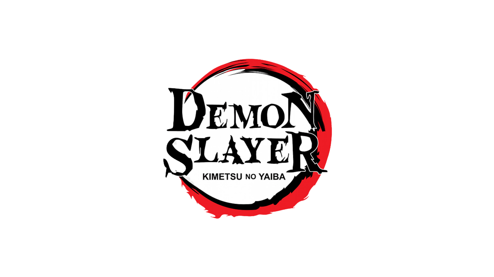

Kimetsu no Yaiba (ou Demon Slayer, como é conhecido em inglês) é uma série de mangá e anime que conquistou o
público global com
sua narrativa envolvente, personagens cativantes e visuais deslumbrantes. Criado por Koyoharu Gotouge, o
mangá foi serializado na
revista Weekly Shonen Jump da Shueisha de fevereiro de 2016 até maio de 2020, com um total de 205 capítulos,
compilados em 23
volumes. A adaptação para anime, produzida pelo estúdio Ufotable, estreou em abril de 2019 e rapidamente se
tornou um fenômeno
cultural.
o
Premissa e Enredo -
A história de Kimetsu no Yaiba se passa em uma versão alternativa do Japão durante o Período Taisho
(1912-1926), uma época de
transição e modernização para o país, mas ainda marcada por tradições e crenças antigas. Neste mundo,
existem demônios (oni) que
aterrorizam os humanos, alimentando-se de carne humana e possuindo habilidades sobrenaturais. Esses demônios
são criados por Muzan
Kibutsuji, o Rei dos Demônios e o primeiro de sua espécie, que pode transformar humanos em demônios ao
compartilhar seu sangue.
A história segue Tanjiro Kamado, um jovem bondoso e trabalhador que vive com sua família em uma remota
montanha. Sua vida tranquila
é destruída quando sua família é brutalmente assassinada por um demônio, deixando apenas sua irmã mais nova,
Nezuko, como
sobrevivente, mas transformada em um demônio. Determinado a salvar sua irmã e vingar sua família, Tanjiro se
junta à organização
dos Caçadores de Demônios, um grupo secreto de guerreiros que dedicam suas vidas a proteger a humanidade
dessas criaturas malignas.
o
Temas e Motivações -
Kimetsu no Yaiba aborda temas profundos como a luta entre o bem e o mal, a redenção, o sacrifício e a
importância da família. O
amor de Tanjiro por sua irmã e sua determinação inabalável para restaurar sua humanidade são os principais
motores da narrativa.
A série também explora a ideia de que mesmo os demônios, vistos como monstros impiedosos, têm histórias
trágicas e complexas,
muitas vezes vítimas das circunstâncias que os levaram a se transformar em tais criaturas.
Além disso, o conceito de superação de limites é central à história, com os personagens constantemente
desafiando suas próprias
capacidades físicas e emocionais para enfrentar inimigos cada vez mais poderosos. Essa determinação é
simbolizada pelas técnicas
de respiração (Kokyu), que permitem aos caçadores de demônios canalizar sua energia vital para realizar
feitos sobre-humanos.
o
Personagens Principais -
Tanjiro Kamado: O protagonista da história. Ele é conhecido por sua gentileza, empatia e senso de
justiça. Tanjiro possui um
olfato extremamente aguçado, o que lhe permite rastrear demônios e identificar suas fraquezas. Ele usa a
Respiração da Água como
técnica principal, mas mais tarde desenvolve a Respiração do Sol, uma técnica ancestral poderosa.
Nezuko Kamado: Irmã mais nova de Tanjiro, transformada em um demônio, mas ainda retendo parte de sua
humanidade. Nezuko não
consome sangue humano e tem habilidades únicas, como alterar seu tamanho e regenerar rapidamente. Ela é
ferozmente protetora de
Tanjiro e luta ao lado dele, mesmo como demônio.
Zenitsu Agatsuma: Um companheiro de Tanjiro, inicialmente covarde e inseguro, mas que possui uma força
impressionante quando
está inconsciente ou em estado de extremo pânico. Ele é um mestre da Respiração do Trovão e desenvolve uma
técnica de velocidade
e precisão incríveis.
Inosuke Hashibira: Outro membro do grupo de Tanjiro, criado por javalis nas montanhas, o que lhe confere
uma personalidade
selvagem e instintiva. Inosuke é impulsivo e orgulhoso, mas também é extremamente habilidoso, usando a
Respiração da Besta,
uma técnica única que ele mesmo criou.
Kanao Tsuyuri: Uma caçadora de demônios que foi treinada pelo Pilar da Flor, Kanae Kocho, e pela Pilar
do Inseto, Shinobu Kocho.
Kanao é inicialmente indecisa e obedece cegamente às ordens, mas ao longo da história, ela começa a
desenvolver sua própria
vontade e voz. Ela usa a Respiração da Flor, uma técnica graciosa e letal.
Muzan Kibutsuji: O principal antagonista da série, Muzan é o primeiro e mais poderoso demônio, capaz de
criar novos demônios
ao dar-lhes seu sangue. Ele é cruel, calculista e busca a imortalidade absoluta. Muzan é o responsável pela
criação das Luas
Superiores, os demônios mais poderosos sob seu comando.
o
Técnicas de Respiração -
As técnicas de respiração são o coração do sistema de combate em Kimetsu no Yaiba. Elas permitem aos
caçadores de demônios
aumentar suas capacidades físicas e realizar movimentos sobre-humanos. Cada técnica é inspirada em elementos
da natureza e possui
várias formas que são usadas em combate
o
Adaptação em Anime e Sucesso Global -
A adaptação em anime de Kimetsu no Yaiba foi um divisor de águas, elevando a popularidade do mangá a novos
patamares. Produzido
pelo estúdio Ufotable, conhecido por sua animação de alta qualidade, o anime é celebrado por sua direção de
arte, coreografia de
lutas, e trilha sonora impactante.
Um dos pontos altos da série foi o episódio 19 da primeira temporada, que apresentou uma batalha
intensamente emocionante e
visualmente impressionante entre Tanjiro, Nezuko e o demônio Rui. Este episódio se tornou viral, trazendo
uma enorme atenção para
a série e elevando suas vendas de mangá para recordes.
O sucesso do anime levou à produção de um filme, Demon Slayer: Mugen Train, que estreou em 2020. O filme
continua a história
diretamente após o final da primeira temporada e se tornou um fenômeno de bilheteria, quebrando recordes no
Japão e em todo o
mundo.
o
Impacto Cultural e Legado -
Kimetsu no Yaiba não é apenas uma história de ação e aventura; é uma obra que ressoa emocionalmente com o
público devido aos seus
temas de sacrifício, família e a eterna luta contra as adversidades. A série trouxe uma nova vida ao gênero
shonen, com sua
abordagem única e visualmente impressionante, e continua a influenciar tanto a indústria do anime quanto a
cultura pop global.
Seu sucesso demonstrou o poder da narrativa combinada com a excelência na produção, provando que mesmo em um
mercado saturado,
uma história bem contada pode conquistar o mundo. Com seu legado estabelecido, Kimetsu no Yaiba permanece
como uma das obras mais
influentes e amadas da última década.
